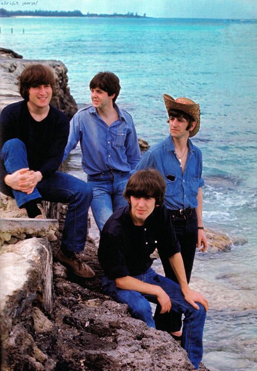

Help!
Help! adalah studio album kelima oleh The Beatles dan soundtrack untuk film mereka dengan nama yang sama. Album ini dirilis pada 6 Agustus 1965. Tujuh dari empat belas lagu, termasuk singel "Help!" dan "Ticket to Ride", muncul di film dan mengambil sisi pertama dari album vinyl. Sisi kedua termasuk "Yesterday", lagu yang paling banyak di-cover yang pernah ditulis. Album ini disambut dengan ulasan kritis yang menguntungkan dan menduduki puncak tangga lagu Australia, Jerman, Inggris dan AS.

Daftar lagu
sisi pertama
- Help!
- The Night Before
- You've Got to Hide Your Love Away
- I Need You
- Another Girl
- You're Going to Lose That Girl
- Ticket to Ride
sisi kedua
- Act Naturally
- It's Only Love
- You Like Me Too Much
- Tell Me What You See
- I've Just Seen a Face
- Yesterday
- Dizzy Miss Lizzy
Selama sesi rekaman untuk album tersebut, The Beatles terus mengeksplorasi kemampuan multitracking studio untuk melapisi suara mereka. "Yesterday" menampilkan string quartet, penggunaan pertama kepekaan Baroque oleh band itu, dan "You've Got to Hide Your Love Away" menyertakan bagian seruling. Di Amerika Utara, rilisan tersebut merupakan album soundtrack yang sebenarnya, menggabungkan tujuh lagu pertama dengan musik instrumental dari film tersebut. Trek yang dihilangkan malah tersebar di Capitol Records LPs Beatles VI, Rubber Soul dan Yesterday and Today.
Di Amerika Serikat, Help! menandai permulaan pengakuan artistik untuk The Beatles dari kritikus mainstream, termasuk perbandingannya dengan tradisi seni musik Eropa. Album itu dinominasikan dalam kategori Album of the Year di Grammy Awards 1966, menandai pertama kalinya sebuah band rock diakui dalam kategori ini. Pada tahun 2000, album ini terpilih ke 119 dalam edisi ketiga buku Colin Larkin All Time Top 1000 Albums. Pada tahun 2020, album ini menduduki peringkat ke-266 dalam daftar "500 Album Terbesar Sepanjang Masa" versi majalah Rolling Stone. Pada September 2013, setelah British Phonographic Industry mengubah aturan penghargaan penjualannya, Help! bersertifikat platinum untuk penjualan yang tercatat sejak tahun 1994.
⬅ Album sebelumnya Menu Album selanjutnya ➡